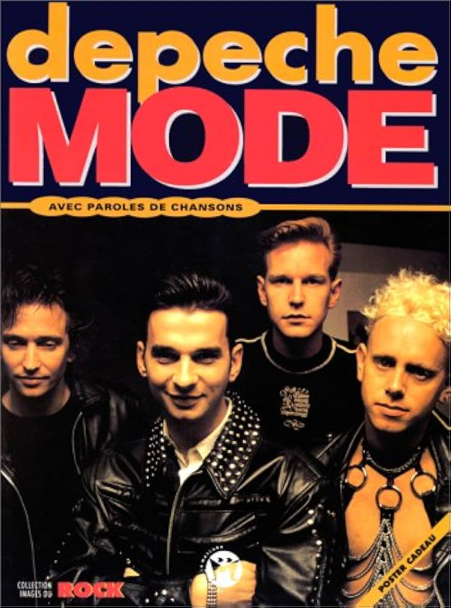
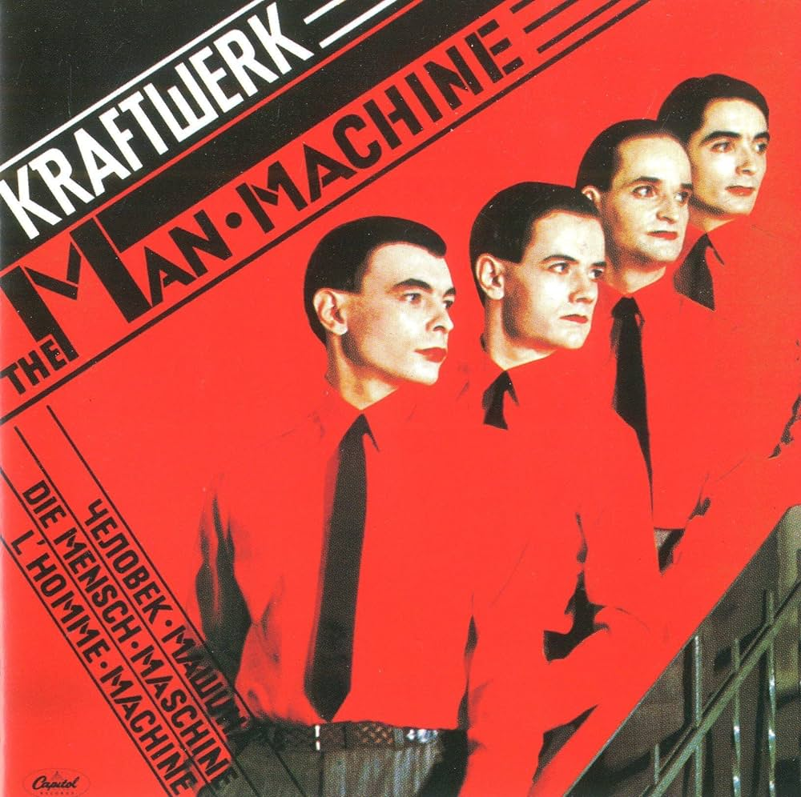

The '80s Music Scene
Music in the 1980s was all about image and with the advent and popularity of MTV, the images that accompanied artists became more important than ever. When it came to music during the decade, nothing was understated, not the sound, not the fashion, not even the charity. The 1980s reflected the beginning of a period of great income disparity and a focus on affluence was reflected in the music. There were also several new genres that popped up including, Hip Hop, New Wave and Hair Metal, all of which have influenced music today.
Noteworthy Artists
Pop

Rock
New Wave

Hip Hop
Synthpop

Post-Punk
Funk
Reggae
EDM
